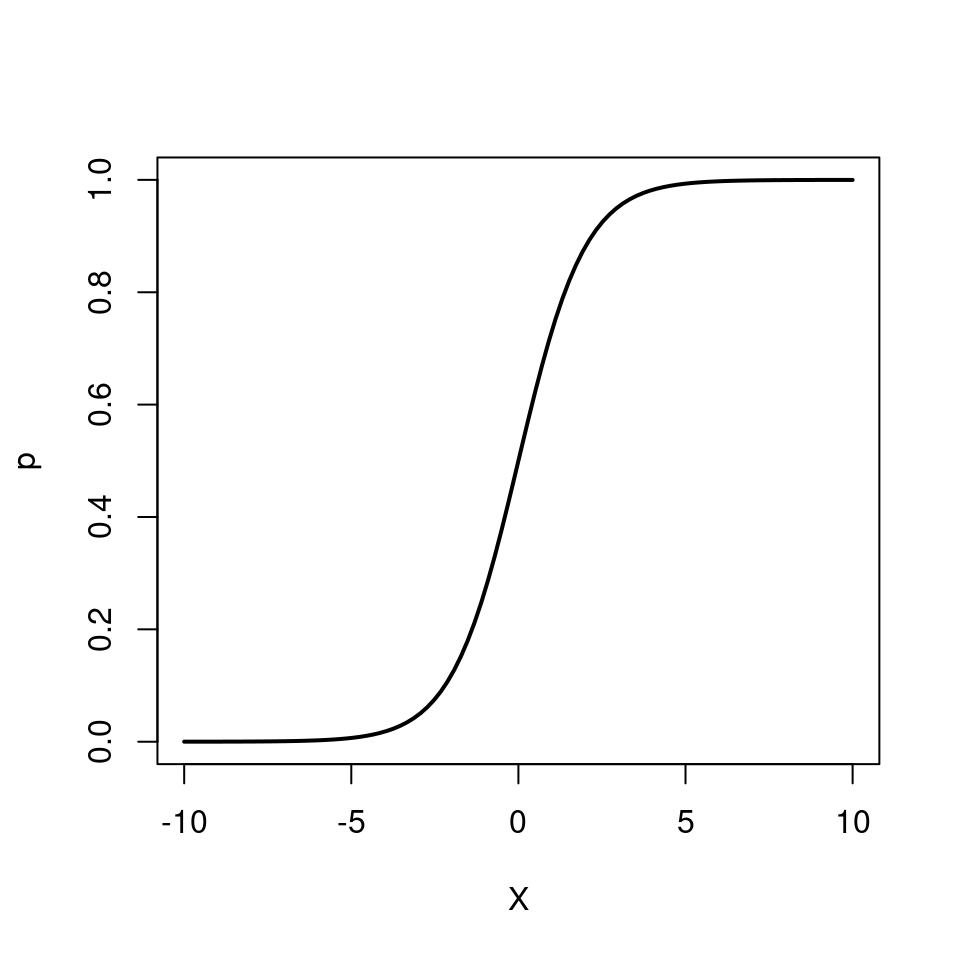
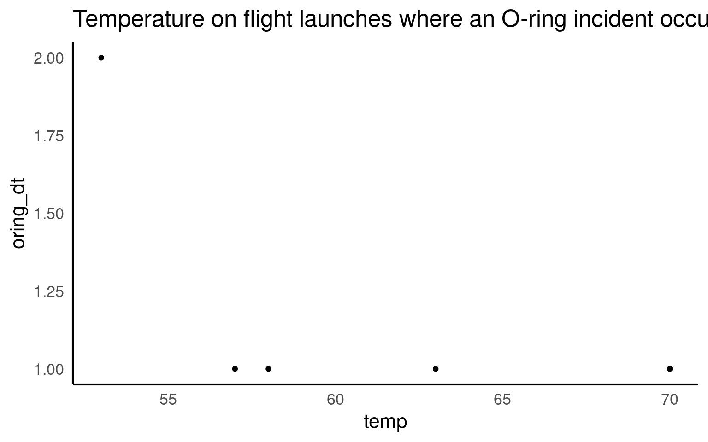

16 Logistic regression (for binary data)
When our response variable is binary, we can use a glm with a binomial error distribution
So far we have only considered continuous and discrete data as response variables. What if our response is a categorical variable (e.g passing or failing an exam, voting yes or no in a referendum, whether an egg has successfully fledged or been predated, infected/uninfected, alive/dead)?
We can model the probability \(p\) of being in a particular class as a function of other explanatory variables.
These type of binary data are assumed to follow a Bernoulli distribution (which is a special case of Binomial) which has the following characteristics:
\[ Y \sim \mathcal{Bern}(p) \]
- Binary variable, taking the values 0 or 1 (yes/no, pass/fail).
- A probability parameter \(p\), where \(0 < p < 1\).
-
Mean = \(p\)
- Variance = \(p(1 - p)\)
Let us now place the Gaussian (simple linear regression), Poisson and logistic models next to each other:
\[ \begin{aligned} Y & \sim \mathcal{N}(\mu, \sigma^2) &&& Y \sim \mathcal{Pois}(\lambda) &&& Y \sim \mathcal{Bern}(p)\\ \mu & = \beta_0 + \beta_1X &&& \log{\lambda} = \beta_0 + \beta_1X &&& ?? = \beta_0 + \beta_1X \end{aligned} \]
Now we need to fill in the ?? with the appropriate term. Similar to the Poisson regression case, we cannot simply model the probabiliy as \(p = \beta_0 + \beta_1X\), because \(p\) cannot be negative. \(\log{p} = \beta_0 + \beta_1X\) won’t work either, because \(p\) cannot be greater than 1. Instead we model the log odds \(\log\left(\frac{p}{1 - p}\right)\) as a linear function. So our logistic regression model looks like this:
\[ \begin{aligned} Y & \sim \mathcal{Bern}(p)\\ \log\left(\frac{p}{1 - p}\right) & = \beta_0 + \beta_1 X \end{aligned} \]
Again, note that we are still “only” fitting straight lines through our data, but this time in the log odds space. As a shorthand notation we write \(\log\left(\frac{p}{1 - p}\right) = \text{logit}(p) = \beta_0 + \beta_1 X\).

We can also re-arrange the above equation so that we get an expression for \(p\)
\[ p = \frac{e^{\beta_0 + \beta_1 X}}{1 + e^{\beta_0 + \beta_1 X}} \]

Note how \(p\) can only vary between 0 and 1.
To implement the logistic regression model in R, we choose family=binomial(link=logit) (the Bernoulli distribution is a special case of the Binomial distribution).
glm(response ~ explanatory, family=binomial(link=logit))16.1 Example: Challenger Disaster

In 1985, NASA made the decision to send the first civilian into space.
This decision brought a huge amount of public attention to the STS-51-L mission, which would be Challenger’s 25th trip to space and school teacher Christa McAuliffe’s 1st. On the afternoon of January 28th, 1986 students around America tuned in to watch McAuliffe and six other astronauts launch from Cape Canaveral, Florida. 73 seconds into the flight, the shuttle experienced a critical failure and broke apart in mid air, resulting in the deaths of all seven crewmembers: Christa McAuliffe, Dick Scobee, Judy Resnik, Ellison Onizuka, Ronald McNair, Gregory Jarvis, and Michael Smith.
After an investigation into the incident, it was discovered that the failure was caused by an O-ring in the solid rocket booster. Additionally, it was revealed that such an incident was foreseeable.
In this half of the worksheet we will discuss how the right statistical model could have predicted the critical failure of an O-ring on that day.
| oring_tot | oring_dt | temp | flight |
|---|---|---|---|
| 6 | 0 | 66 | 1 |
| 6 | 1 | 70 | 2 |
| 6 | 0 | 69 | 3 |
| 6 | 0 | 68 | 4 |
| 6 | 0 | 67 | 5 |
| 6 | 0 | 72 | 6 |
The data columns are:
oring_tot: Total number of orings on the flight
oring_dt : number of orings that failed during a flight
temp: Outside temperature on the date of the flight
flight order of flights
It was frequently discussed issue that temperature might play a role in the critical safety of the o-rings on the shuttles. One of the biggest mistakes made in assessing the flight risk for the Challenger was to only look at the flights where a failure had occurred
challenger %>%
filter(oring_dt > 0) %>%
ggplot(aes(y=oring_dt, x=temp))+geom_point()+
ggtitle("Temperature on flight launches where an O-ring incident occurred")
From this it was concluded that temperature did not appear to affect o-ring risk of failure, as o-ring failures were detected at a range of different temperatures.
However when we compare this to the full data that was available a very different picture emerges.
challenger |>
ggplot(aes(y=oring_dt,
x=temp))+
geom_point()+
geom_smooth(method="lm")+
ggtitle("All launch data")
When we include the flights without incident and those with incident, we can see that there is a very clear relationship between temperature and the risk of an o-ring failure. It has been argued that the clear presentation of this data should have allowed even the casual observer to determine the high risk of disaster.
However if we want to understand the actual relationship between temperature and risk then there are several issues with fitting a linear model here - once again the data is an integer, and bounded by zero (our model predicts negative failure rates within the observed data range).
We COULD consider this as suitable for a Poisson model - but if we are really interested in determining the binary risk of having a flight with o-ring failure vs. no failure. Then we should implement a GLM with a Binomial distribution.
We can use dplyr to generate a binary column of no incident ‘0’ and fail ‘1’ for anything >0.
Fitting a binary GLM
binary_model <- glm(cbind(oring_dt, oring_int) ~ temp, family = binomial(link = "logit"), data = challenger)
binary_model |>
broom::tidy(conf.int=T)| term | estimate | std.error | statistic | p.value | conf.low | conf.high |
|---|---|---|---|---|---|---|
| (Intercept) | 8.8169241 | 3.6069715 | 2.444412 | 0.0145089 | 1.9549041 | 16.4913814 |
| temp | -0.1794922 | 0.0582182 | -3.083096 | 0.0020486 | -0.3073739 | -0.0725742 |
So we are now fitting the following model
\[ Y \sim Bern(p) \] \[ \log\left[ \frac { P( \operatorname{oring\_binary} = fail) }{ 1 - P( \operatorname{oring\_binary} = fail) } \right] = \beta_{0} + \beta_{1}(\operatorname{temp}) \]
Which in R will look like this:
- Intercept = \(\beta_{0}\) = 23.77
When the temperature is 0°F the mean log-odds are 8.82 [95%CI: 1.95- 16.5] for a failure incident in the O-rings
- Temp = \(\beta_{1}\) = -0.179 [95%CI: -0.307 - -0.0726]
For every rise in the temperature by 1°F, the log-odds of a critical incident fall by 0.179.
16.1.1 Interpreting model coefficients
We first consider why we are dealing with odds \(\frac{p}{1-p}\) instead of just \(p\). They contain the same information, so the choice is somewhat arbitrary, however we’ve been using probabilities for so long that it feels unnatural to switch to odds. There are good reasons for this, however. Odds \(\frac{p}{1-p}\) can take on any value from 0 to ∞ and so part of our translation of \(p\) to an unrestricted domain is already done (\(P\) is restricted to 0-1). Take a look at some examples below:
| Probability | |
|
|---|---|---|
| \(p=.95\) | \(\frac{95}{5} = \frac{19}{1} = 19\) | 19 to 1 odds for |
| \(p=.75\) | \(\frac{75}{25} = \frac{3}{1} = 3\) | 3 to 1 odds for |
| \(p=.50\) | \(\frac{50}{50} = \frac{1}{1} = 1\) | 1 to 1 odds |
| \(p=.25\) | \(\frac{25}{75} = \frac{1}{3} = 0.33\) | 3 to 1 odds against |
| \(p=.05\) | \(\frac{95}{5} = \frac{1}{19} = 0.0526\) | 19 to 1 odds against |
When we use a binomial model, we produce the ‘log-odds’, this produces a fully unconstrained linear regression as anything less than 1, can now occupy an infinite negative value -∞ to ∞.
\[ \log\left(\frac{p}{1-p}\right) = \beta_{0}+\beta_{1}x_{1}+\beta_{2}x_{2} \]
\[ \frac{p}{1-p} = e^{\beta_{0}}e^{\beta_{1}x_{1}}e^{\beta_{2}x_{2}} \]
We can interpret \(\beta_{1}\) and \(\beta_{2}\) as the increase in the log odds for every unit increase in \(x_{1}\) and \(x_{2}\). We could alternatively interpret \(\beta_{1}\) and \(\beta_{2}\) using the notion that a one unit change in \(x_{1}\) as a percent change of \(e^{\beta_{1}}\) in the odds. That is to say, \(e^{\beta_{1}}\) is the odds ratio of that change.
If you want to find out more about Odds and log-odds head here
16.2 Probability
16.2.1 Making predictions
If we use the emmeans() function it will convert log-odds to estimate the probability of o-ring failure at the mean value of x (temperature). And add confidence intervals!
A powerful use of logisitic regression is prediction. Can we predict the probability of an event occuring using our data?
Use emmeans to calculate the log-odds of O-ring failure?
Specify the type argument to get the “probability” of o-ring failure
16.2.2 Odds and Probability
But how do log-odds and probability actually relate?
This is the equation to work out probability using the exponent of the linear regression equation:
\[ P(\operatorname{risk of failure at } X=69.6)\left[ \frac{e^{8.81+(-0.18 \times 69.6)}}{1+e^{8.81+(-0.18 \times 69.6)}} \right] \]
Which produces the following result and we can confirm the risk of an o-ring failure on an average day is 0.025
16.2.3 Changes in probability
A useful rule-of-thumb can be the divide-by-four rule.
This can be described as the maximum difference in probability for a unit change in \(X\) is \(\beta/4\).
In our example the maximum difference in probability from a one degree change in Temp is \(-0.18/4 = -0.045\)
So the maximum difference in probability of failure corresponding to a one degree change is 4.5%
16.2.4 Emmeans
Alternatively we can also do this calculation via emmeans
Make a ggplot of the change in probability of Oring failure against temperature
Use emmeans to calculate the probability of failure at different temperatures?
Add this to a ggplot
Include 95% confidence intervals

16.3 Challenger launch
On the day the Challenger launched the outside air temperature was 36°F
We can use our model to make predictions about the risk of o-ring failure
16.3.1 More predictions
Make a specific prediction about the probability of o-ring failure on the day of the Challenger launch
- Use emmeans to calculate the probability of failure at this specific temperature?
First - we make a new dataset with the temperature on the day of the Challenger Launch 36°F
temp prob SE df asymp.LCL asymp.UCL
36 0.913 0.122 Inf 0.338 0.995
Confidence level used: 0.95
Intervals are back-transformed from the logit scale We can see from our fitted model, an O-ring failure on the day of the Challenger launch could have been predicted with a probability of
0.91 [91.3%CI: 0.34-99.5]
16.4 Assumptions
The performance package detects and alters the checks. Pay particular attention to the binned residuals plot - this is your best estimate of possible overdispersion (requiring a quasi-likelihood fit). In this case there is likely not enough data for robust checks - we could consider a quasi-likelihood model in order to have more conservative confidence intervals.

Try fitting a quasi-likelihood model
Fit a quasibinomial model
How does this change the means, standard errors and significance tests
Estimates from the model will not change
Standard errors will be widened by a fixed dispersion parameter (> 1)
This may increase p-values, but here there is no change in interpretation
quasibinary_model <- glm(cbind(oring_dt, oring_int) ~ temp,
family=quasibinomial, # quasilikelihood
data=challenger)
summary(quasibinary_model)
Call:
glm(formula = cbind(oring_dt, oring_int) ~ temp, family = quasibinomial,
data = challenger)
Coefficients:
Estimate Std. Error t value Pr(>|t|)
(Intercept) 8.81692 2.93149 3.008 0.00670 **
temp -0.17949 0.04732 -3.794 0.00106 **
---
Signif. codes: 0 '***' 0.001 '**' 0.01 '*' 0.05 '.' 0.1 ' ' 1
(Dispersion parameter for quasibinomial family taken to be 0.6605263)
Null deviance: 20.706 on 22 degrees of freedom
Residual deviance: 9.527 on 21 degrees of freedom
AIC: NA
Number of Fisher Scoring iterations: 616.5 Write-ups
Write up the results
- How would you write up for findings from this analysis?
Analysis: I used a Binomial logit-link Generalized Linear Model to analyse the effect of temperature on the likelihood of O-ring failure.
All analyses were carried out in R (ver 4.1.3) (R Core Team 2021) with the following packages; tidyverse (Wickham et al 2019).
Results: I found a significant negative relationship between temperature and probability of o-ring failure (logit-odds = -0.17 [95%CI: -0.31 - -0.07], z = -3.1, df = 21, P = 0.002). At an average temperature of 69.6°F the probability of o-ring failure was estimated at 0.025[0.007-0.08], but this rose to 0.91[0.34-1] at 36°F.
Note you could use anova( test = “Chisq”) here, but as there is only one, continuous variable, we can also report directly from the summary table.
16.6 Final checklist
Think carefully about the hypotheses to test, use your scientific knowledge and background reading to support this
Import, clean and understand your dataset: use data visuals to investigate trends and determine if there is clear support for your hypotheses
Decide on the appropriate error structure for your model (Gaussian = continuous, Poisson = count, Binomial = binary)
Start with canonical link functions, but these can be altered if needed
Fit a (generalized) linear model, including interaction terms with caution
Investigate the fit of your model, understand that parameters may never be perfect, but that classic patterns in residuals may indicate a poorly fitting model - sometimes this can be fixed with careful consideration of missing variables or through data transformation
Check for overdispersion in models where variance is not estimated independently of the mean (Poisson and Binomial) - may have to use quasi-likelihood fitting
Test the removal of any interaction terms from a model, look at AIC and significance tests (Remember test = “F” for Gaussian and Quasilikelihood models, “Chisq” for Poisson and Binomial models)
Make sure you understand the output of a model summary, sense check this against the graphs you have made - Do estimates need converting back to the original response scale?
The direction and size of any effects are the priority - produce estimates and uncertainties. Make sure the observations are clear.
Write-up your significance test results, taking care to report not just significance (and all required parts of a significance test). Do you know what to report? Within a complex model - reporting t/z will indicate the slope of the line for that single term against the intercept, F/Chi is the overall effect of a predictor across all levels, post-hoc if you wish to compare across all levels.
Well described tables and figures can enhance your results sections - take the time to make sure these are informative and attractive.